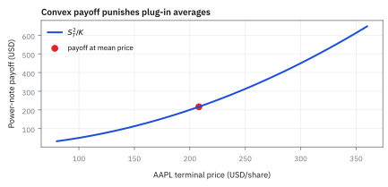
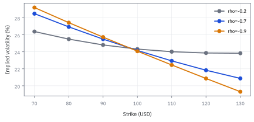

13.7 The Feynman–Kac Formula
เดินย้อนด้วยสมการหรือเดินหน้าด้วยการจำลอง ก็ต้องได้ราคาเดียวกัน
หุ้นราคา \$200 ดอกเบี้ย 4% volatility 30% ต่อปี note ตัวอย่างจ่ายราคาหุ้นกำลังสองหาร 200 ในหนึ่งปี โปรแกรมหนึ่งเดินย้อนจากเงินที่จ่ายตอนจบ อีกโปรแกรมสุ่มเส้นทางไปข้างหน้าแล้วเฉลี่ย ราคาวันนี้ควรเป็นเท่าไร?
เฉลย: \$227.77 ทั้งสองโปรแกรม ถ้าต่างกันเกินความคลาดเคลื่อนของการสุ่ม แปลว่ามีโปรแกรมหนึ่งผิด ส่วนทางลัดที่เอาค่าเฉลี่ยของราคาไปใส่สูตรจะได้ \$208.16 ต่ำไป 9.42%
Feynman–Kac formula รับประกันว่าค่าเฉลี่ยของเส้นทางข้างหน้า กับคำตอบของสมการที่เดินย้อนเวลา เป็นตัวเลขเดียวกัน
ศัพท์ที่ใช้ในหัวข้อนี้
- Feynman–Kac formula
- ผลที่เชื่อมค่าเฉลี่ยคิดลดของเงินที่จ่ายตอนจบ เข้ากับคำตอบของสมการที่เดินย้อนเวลา ใช้สลับระหว่างการจำลองกับการแก้สมการบนตาราง โดยไม่เปลี่ยนแบบจำลอง
- partial differential equation (PDE)
- สมการที่ผูกความชันของมูลค่าตามเวลาและตามราคาเข้าด้วยกัน ใช้เดินเงินที่จ่ายตอนจบย้อนกลับมาหามูลค่าวันนี้
- Monte Carlo
- การสุ่มเส้นทางจำนวนมากแล้วเฉลี่ยเงินที่จ่ายที่คิดลดแล้ว ใช้ตั้งราคาเมื่อมีตัวแปรหลายตัวหรือเงินที่จ่ายขึ้นกับเส้นทาง
- forward averaging
- การเฉลี่ยเงินที่จ่ายของทุกเส้นทางโดยเดินจากวันนี้ไปข้างหน้า ใช้เป็นฉบับไม่ต่อเนื่องของ Monte Carlo ในต้นไม้
- backward induction
- การคำนวณมูลค่าย้อนจากปลายต้นไม้ทีละชั้น ใช้เป็นฉบับไม่ต่อเนื่องของการเดินย้อนด้วยสมการ
- terminal condition
- ค่าของมูลค่า ณ วันครบกำหนดซึ่งเท่ากับเงินที่สัญญาจ่าย ใช้ยึดคำตอบของสมการเดินย้อนให้เหลือค่าเดียว
- payoff
- เงินที่สัญญาจ่ายตามราคาตอนจบ ใช้เป็นตัวที่ต้องหาค่าเฉลี่ย
- power note
- สัญญาตัวอย่างที่จ่ายตามราคากำลังสองหารค่าคงที่ให้กลับเป็นหน่วยดอลลาร์ ใช้ทดสอบ Feynman–Kac เพราะคำนวณคำตอบแบบปิดได้
- delta
- ความชันของมูลค่าสัญญาต่อราคาหุ้น ใช้กำหนดจำนวนหุ้นที่ต้องถือเพื่อหักล้าง
- gamma
- ความโค้งของมูลค่าสัญญาต่อราคาหุ้น ใช้วัดว่า delta เปลี่ยนเร็วแค่ไหนเมื่อราคาขยับ
- convexity
- ความโค้งหงายที่ทำให้ค่าเฉลี่ยของเงินที่จ่ายสูงกว่าเงินที่จ่าย ณ ราคาเฉลี่ย ใช้อธิบายว่าทำไมทางลัดให้ราคาต่ำไป
- standard error
- ความผันผวนของค่าเฉลี่ยจากการจำลอง เท่ากับความผันผวนของตัวอย่างหารรากของจำนวนเส้นทาง ใช้ตัดสินว่าสองคำตอบต่างกันเกินโชคหรือไม่
- local martingale
- กระบวนการที่ไม่มีแนวโน้มในช่วงสั้น แต่ค่าเฉลี่ยระยะยาวอาจลดลงได้เมื่อหางหนักมาก ใช้อธิบายกรณีที่สองวิธีให้คำตอบไม่ตรงกัน
สัญลักษณ์ที่ใช้ในหัวข้อนี้
| สัญลักษณ์ | ความหมาย | หน่วย |
|---|---|---|
| $S_t$ | ราคาหุ้น ณ เวลา $t$ ภายใต้ $Q$ | USD/หุ้น |
| $r$ | ดอกเบี้ยแบบทบต้นต่อเนื่อง | 1/ปี |
| $\sigma$ | volatility ต่อปี | $1/\sqrt{\text{year}}$ |
| $T$ | วันครบกำหนด | ปี |
| $g(S_T)$ | เงินที่ note จ่ายตอนจบ | USD |
| $K$ | ค่าคงที่ที่ทำให้ราคากำลังสองกลับเป็นดอลลาร์ | USD/หุ้น |
| $f(t,S)$ | มูลค่าสัญญา ณ เวลาและราคาหนึ่ง | USD |
| $f_t$, $f_S$, $f_{SS}$ | ความชันตามเวลา delta และ gamma | USD/ปี, หุ้น, หุ้น/USD |
| $W_t^Q$ | Brownian motion ภายใต้ $Q$ | $\sqrt{\text{year}}$ |
| $\mathbb E^Q_u[\cdot]$ | ค่าเฉลี่ยใต้ $Q$ เมื่อรู้ข้อมูลถึงเวลา $u$ | หน่วยของตัวข้างใน |
ที่มาที่ไป: สองศาสตร์ที่มาบรรจบกันโดยบังเอิญ
ทศวรรษ 1940 Richard Feynman สร้างกลศาสตร์ควอนตัมใหม่ด้วยการคิดว่าอนุภาคเดินผ่านทุกเส้นทางพร้อมกัน แล้วรวมผลของทุกเส้นทาง ปี 1949 Mark Kac ที่ Cornell ฟังบรรยายของเขาแล้วเห็นว่า ถ้าเปลี่ยนเวลาในสูตรให้เป็นเวลาจริง การรวมทุกเส้นทางคือค่าเฉลี่ยบนเส้นทางของ Brownian motion และมันแก้สมการความร้อนได้
ในการเงิน Black, Scholes และ Merton (1973) พิสูจน์ว่าราคาต้องแก้สมการแบบหนึ่ง (บทที่ 14) ต่อมา Harrison, Kreps และ Pliska แสดงว่าราคาเดียวกันคือค่าเฉลี่ยใต้ Q ที่คิดลดแล้ว Feynman–Kac คือสะพานระหว่างสองสำนักนี้ และเป็นเครื่องตรวจงานที่แรงที่สุดที่มี
ขั้นที่ 1 — ต้นไม้สองชั้นด้วยมือ: เดินหน้ากับเดินย้อนได้เท่ากัน
หุ้น \$100 ขึ้น 1.1 เท่าหรือลง 0.9 เท่าทุกชั้น ดอกเบี้ยศูนย์ โอกาสใต้ Q จึงครึ่งต่อครึ่ง note จ่ายราคากำลังสองหาร 100 ลองคิดสองทาง
ทางแรกเฉลี่ยเงินที่จ่ายของทุกเส้นทางตรง ๆ ทางที่สองเริ่มจากเงินที่จ่ายตอนจบ แล้วเฉลี่ยย้อนทีละชั้น ได้ 102.01 เท่ากันเพราะกฎเฉลี่ยสองชั้นของหัวข้อ 8.1 ทางลัดที่ใส่ราคาเฉลี่ยเข้าไปได้ 100 ต่ำไป เพราะเงินที่จ่ายโค้งหงาย
ขั้นที่ 2 — ของที่โจทย์ให้: หุ้นใต้ Q และ note ที่หน่วยถูก
ตั้งโจทย์ต่อเนื่องให้ชัด หุ้นเดินแบบหัวข้อ 13.6 ใต้ Q คือโตเท่าดอกเบี้ย เอา K หารเงินที่จ่ายเพื่อให้หน่วยกลับเป็นดอลลาร์
ราคากำลังสองมีหน่วยดอลลาร์กำลังสองต่อหุ้นกำลังสอง เอา K ที่มีหน่วยดอลลาร์ต่อหุ้นหาร แล้วคิดต่อหนึ่งหุ้น จึงได้หน่วยดอลลาร์ นี่คือขั้นที่ 1 ในเวอร์ชันต่อเนื่อง
ขั้นที่ 3 — นิยามของด้านค่าเฉลี่ย
บรรทัดนี้เป็นนิยามของมูลค่าจากด้านค่าเฉลี่ย ซึ่งมาจากสูตรตั้งราคาของหัวข้อ 13.6 สิ่งที่หัวข้อนี้จะแสดงคือของก้อนนี้แก้สมการเดินย้อนได้ด้วย
มูลค่า ณ เวลา t เมื่อราคาเท่ากับ S คือค่าเฉลี่ยของเงินที่จ่ายตอนจบใต้ Q คิดลดจาก T กลับมาที่ t นี่คือทางเดินหน้าของขั้นที่ 1
ขั้นที่ 4 — พิสูจน์สะพาน: มูลค่าคิดลดเป็น martingale แล้วใช้ Itô
คูณมูลค่าด้วยตัวคิดลดให้ได้ของที่เป็น martingale ตามกฎเฉลี่ยสองชั้น แล้วใช้ Itô's lemma หาการเปลี่ยนของมัน ส่วนที่คาดได้ต้องเป็นศูนย์
บรรทัดที่สามถึงห้าคือกฎเฉลี่ยสองชั้น ค่าเฉลี่ยซ้อนค่าเฉลี่ยยุบเหลือค่าเฉลี่ย ณ เวลาแรก ตัวคิดลดมีแต่เวลา ไม่มีแรงสุ่ม จึงไม่มีพจน์ไขว้กับ df
ก้อนที่คูณแรงสุ่มเฉลี่ยศูนย์เสมอ ก้อนที่คูณ du จึงต้องเป็นศูนย์ทุกเวลาและทุกราคา ไม่อย่างนั้นมูลค่าคิดลดจะเพิ่มหรือลดโดยคาดได้ ซึ่งขัดกับ martingale
ขั้นที่ 5 — สมการเดินย้อน พร้อมเงื่อนไขตอนจบ
เขียนด้านที่เป็นสมการให้ครบ เงื่อนไขตอนจบคือตัวที่ล็อกคำตอบให้เหลือค่าเดียว เหมือนชั้นสุดท้ายของต้นไม้ในขั้นที่ 1
การเปลี่ยนตามเวลา ส่วนที่มาจาก drift ส่วนที่มาจากความโค้งคูณความผันผวน และส่วนคิดลด ต้องรวมเป็นศูนย์ ที่วันครบกำหนดไม่มีเวลาเหลือ มูลค่าจึงเท่ากับเงินที่จ่าย แก้สมการนี้ย้อนจาก T ไปหาวันนี้บนตาราง คือทางเดินย้อนของขั้นที่ 1
เมื่อไรสะพานนี้ขาด
สะพานนี้ต้องการสองเงื่อนไข ข้อแรก เงินที่จ่ายต้องไม่โตเร็วเกินไป ถ้าโตเร็วอย่าง $e^{S^2}$ ค่าเฉลี่ยจะเป็นอนันต์และสมการอาจมีคำตอบหลายตัว ข้อสอง ก้อนที่คูณแรงสุ่มต้องเฉลี่ยศูนย์จริงในระยะยาว ไม่ใช่แค่ในช่วงสั้น
ในแบบจำลองที่ความผันผวนระเบิดเร็วเมื่อราคาสูง ข้อสองอาจไม่จริง มูลค่าคิดลดเป็นแค่ local martingale ค่าเฉลี่ยกับคำตอบของสมการจะไม่ตรงกัน ตำราเรียกกรณีนี้ว่าฟองสบู่ในแบบจำลอง
ขั้นที่ 6 — ด้านค่าเฉลี่ย: ค่าเฉลี่ยของราคากำลังสองใต้ Q
ใช้คำตอบของ Geometric Brownian Motion (GBM) จากหัวข้อ 13.2 ใต้ Q ที่ drift เป็น r หากำลังสองของมัน แล้วใช้สูตร $\mathbb E[e^{cZ}]=e^{c^2/2}$ ของหัวข้อ 13.2
หากำลังสองแล้วเลขชี้กำลังคูณสองทั้งก้อน ตัวคูณของก้อนสุ่มใหญ่ขึ้นสองเท่า กำลังสองของมันจึงใหญ่สี่เท่า หารสองเหลือสองเท่า −σ² กับ +2σ² รวมเป็น +σ² ความผันผวนโผล่มาเป็นบวก เพราะของที่เป็นกำลังสองได้ประโยชน์จากความผันผวน
ขั้นที่ 7 — คิดลดเป็นมูลค่าแบบปิด
ดึงค่าคงที่ K ออกนอกค่าเฉลี่ย แทนผลของขั้นที่ 6 แล้วคิดลดตามนิยามของขั้นที่ 3
ตัวคิดลดหัก r ออกไปหนึ่งตัว เหลือ r บวก σ² นี่คือคำตอบจากทางเดินหน้า ขั้นถัดไปเดินอีกทางจากสมการ การได้คำตอบเดียวกันจากสองทางที่ไม่เกี่ยวกัน คือวิธีตรวจที่แข็งแรงที่สุดที่เรามี
ขั้นที่ 8 — ความชันและความโค้งของคำตอบ
หาสามตัวที่สมการของขั้นที่ 5 ต้องใช้ เขียนผลกลับในรูปของ f เอง เพื่อให้ขั้นถัดไปตรวจได้ด้วยตา
เครื่องหมายลบในบรรทัดแรกมาจากเวลาที่เหลือ T − t ที่ลดลงเมื่อเวลาเดินหน้า ทุกบรรทัดยังมีก้อน exponential เดิมติดอยู่ จึงเขียนกลับเป็น f ได้ ขั้นนี้เป็น calculus ธรรมดา ไม่ใช้ความน่าจะเป็นเลย
ขั้นที่ 9 — แทนลงสมการ: ทุกพจน์หักกันเป็นศูนย์
แทนผลของขั้นที่ 8 ลงในด้านซ้ายของสมการทีละพจน์ ถ้าสองทางคือของเดียวกัน ผลต้องเป็นศูนย์ทุกเวลาและทุกราคา
S ตัดกับหนึ่งส่วน S ในพจน์ delta และ S² ตัดกับหนึ่งส่วน S² ในพจน์ gamma ก้อนของ r คือ −r + 2r − r ก้อนของ σ² คือ −σ² + σ² หักกันหมด คำตอบจากทางเดินหน้าแก้สมการเดินย้อนได้จริง
ขั้นที่ 10 — delta และ gamma ของ note ที่ \$200
ใช้ผลของขั้นที่ 8 ที่ราคา \$200 เพื่อบอก desk ว่าต้องถือหุ้นเท่าไรหักล้าง และ delta เปลี่ยนเร็วแค่ไหน
note หนึ่งฉบับไวต่อราคาเท่ากับหุ้น 2.28 หุ้น gamma มีหน่วยหุ้นต่อดอลลาร์ ถ้าราคาขึ้น \$1 delta เพิ่มราว 0.011 หุ้น gamma เป็นบวกเพราะเงินที่จ่ายโค้งหงาย
ขั้นที่ 11 — ทางลัดที่ผิด: ใส่ราคาเฉลี่ยเข้าสูตร
เอาค่าเฉลี่ยของราคาใต้ Q ไปหากำลังสองก่อน แล้วคิดลด เทียบกับคำตอบที่ถูก
ทางลัดตัดความผันผวนของราคาปลายทางทิ้ง จึงต่ำไป \$19.60 หรือ 9.42% ซึ่งเท่ากับ $e^{\sigma^2}-1$ พอดี เป็นเรื่องเดียวกับ 102.01 กับ 100 ในต้นไม้ของขั้นที่ 1
Figure 13.7a — ตารางย้อนหลัง กับเส้นทางเดินหน้า

การแก้สมการเริ่มจากเงินที่จ่ายตอนจบแล้วย้อนหามูลค่าวันนี้ ส่วน Monte Carlo เริ่มจากราคาวันนี้แล้วเฉลี่ยไปข้างหน้า Feynman–Kac บอกว่าทั้งคู่คำนวณของชิ้นเดียวกัน
Figure 13.7b — ความโค้งคือที่มาของช่องว่าง

เงินที่จ่ายแบบกำลังสองโค้งหงาย เงินที่จ่าย ณ ราคาเฉลี่ยจึงต่ำกว่าค่าเฉลี่ยของเงินที่จ่าย ช่องว่างแนวตั้งคือส่วนของความผันผวนที่ทางลัดทำหาย
Figure 13.7c — Monte Carlo เข้าใกล้คำตอบเมื่อสุ่มมากขึ้น

ค่าประมาณจากการสุ่มแกว่งรอบคำตอบแบบปิด \$227.77 และความผันผวนหดเมื่อเพิ่มจำนวนเส้นทาง การตรงกันภายใน standard error เป็นการตรวจโค้ด ไม่ใช่หลักฐานว่าสมมติฐานถูก
คำตอบ ตรวจเอง และแปลว่าอะไร
โจทย์ให้อะไรมาบ้าง: หุ้น \$200 ดอกเบี้ย 4% volatility 30% note จ่าย S²/200 ในหนึ่งปี
คำตอบ: มูลค่าวันนี้ \$227.77 ทั้งจากค่าเฉลี่ยและจากสมการ delta 2.2777 หุ้น gamma 0.01139 หุ้นต่อดอลลาร์ ทางลัดได้ \$208.16 ต่ำไป 9.42% ถ้าผลการสุ่มต่างจาก \$227.77 เกินความคลาดเคลื่อนของการสุ่ม ให้ตรวจหน่วยเวลา หน่วยของเงินที่จ่าย และตัวคิดลด ก่อนโทษตัวเลขสุ่ม
ตรวจเองใน 10 วินาที: 200 คูณ $e^{0.13}$ ได้ราว 227.77 และ 227.77 − 208.16 = 19.61
แปลว่าอะไร: เขียนราคาสองวิธีเสมอเมื่อทำได้ ถ้าไม่ตรงกัน อย่างน้อยหนึ่งวิธีผิด
กับดัก: ใส่ drift ของโลกจริงแทนดอกเบี้ย
Feynman–Kac สำหรับการตั้งราคาใช้หุ้นที่โตเท่าดอกเบี้ยใต้ Q ไม่ใช่ drift ที่ทายไว้ ถ้าใส่ drift 10% แทน 4% ในตัวอย่างนี้ ค่าเฉลี่ยของราคากำลังสองจะโตด้วย 2(0.10) + 0.09 แล้วคิดลดที่ 4% ได้ $200e^{0.25}$ = \$256.81 สูงเกินไป \$29 วิธีจับข้อผิดนี้คือ ถ้าความเห็นว่าตลาดจะขึ้นทำให้ราคา option ในโปรแกรมเปลี่ยน แปลว่าโปรแกรมใช้โลกผิด
ข้อจำกัด: วิธีนี้สมมติอะไร และของจริงเป็นอย่างไร
| เรื่อง | วิธีนี้สมมติว่า | ของจริงเป็นอย่างไร | ผลที่ตามมาเวลาใช้งาน |
|---|---|---|---|
| เงื่อนไขที่ต้องจริง | สองทางให้คำตอบเดียวกันเสมอ | ต้องมีเงื่อนไขทางเทคนิคหลายข้อ | ในกรณีที่ payoff โตเร็วมาก ความเท่ากันอาจไม่จริง |
| ความเร็ว | เลือกทางไหนก็ได้ | การสุ่มช้ามากเมื่อต้องการความแม่นสูง | การเพิ่มความแม่นสองเท่าต้องเพิ่มงานสี่เท่า |
| มิติ | ใช้ได้ทุกจำนวนมิติ | การแก้สมการช้าลงมากเมื่อมิติเพิ่ม | เกินสามมิติมักต้องหันไปใช้การสุ่มแทน |
แถวล่างคือกฎหลักในการเลือกวิธี คือดูจำนวนมิติของปัญหาเป็นอันดับแรก
แล้วเอาไปใช้ทำอะไรได้จริงบ้าง
ใช้เลือกวิธีคำนวณให้เหมาะกับปัญหา สัญญาที่มีตัวแปรหนึ่งถึงสองตัวแก้สมการบนตารางได้เร็วและแม่น สัญญาที่อ้างอิงหลายสินทรัพย์หรือขึ้นกับเส้นทางใช้การสุ่ม
ใช้ตรวจงานข้ามวิธี ซึ่งเป็นวิธีจับข้อผิดที่ดีที่สุดในงานตั้งราคา และใช้เป็นสะพานไปบทที่ 14 ที่สร้างสมการของ Black–Scholes และบทที่ 21 ที่ใช้ทั้งสองวิธี
โค้ดตรวจ Feynman–Kac: เดินย้อนด้วยสมการ กับเดินหน้าด้วยค่าเฉลี่ย
import numpy as np
from math import exp
g = np.array([121, 99, 81]) ** 2 / 100
assert np.allclose(g, [146.41, 98.01, 65.61])
fwd = 0.25 * g[0] + 0.5 * g[1] + 0.25 * g[2]
up, dn = 0.5 * (g[0] + g[1]), 0.5 * (g[1] + g[2])
assert abs(fwd - 102.01) < 1e-9 and abs(up - 122.21) < 1e-9 and abs(dn - 81.81) < 1e-9 and abs(0.5 * (up + dn) - fwd) < 1e-9
S0, K, r, sig, T = 200, 200, 0.04, 0.30, 1
f = lambda t, S: S ** 2 / K * np.exp((r + sig ** 2) * (T - t))
assert abs(f(0, S0) - 227.77) < 5e-3
h = 1e-3
ft = (f(h, S0) - f(-h, S0)) / (2 * h); fS = (f(0, S0 + h) - f(0, S0 - h)) / (2 * h)
fSS = (f(0, S0 + h) - 2 * f(0, S0) + f(0, S0 - h)) / h ** 2
assert abs(ft + r * S0 * fS + 0.5 * sig ** 2 * S0 ** 2 * fSS - r * f(0, S0)) < 1e-4 # the PDE holds
assert abs(fS - 2.2777) < 5e-4 and abs(fSS - 0.01139) < 5e-6
assert abs(exp(-r) * (S0 * exp(r)) ** 2 / K - 208.16) < 5e-3 and abs(f(0, S0) / 208.16 - 1 - 0.0942) < 5e-4
Z = np.random.default_rng(20).standard_normal(2_000_000)
ST = S0 * np.exp((r - sig ** 2 / 2) * T + sig * Z)
assert abs(exp(-r * T) * (ST ** 2 / K).mean() / f(0, S0) - 1) < 0.005โค้ดยืนยันว่าต้นไม้สองชั้นเดินหน้าและเดินย้อนได้ 102.01 เท่ากัน ราคา note \$227.77 ทำให้สมการเดินย้อนเป็นศูนย์ delta 2.2777 หุ้น ทางลัดที่ใส่ราคาเฉลี่ยให้ต่ำไป 9.42% และจำลองสองล้านเส้นทางได้ราคาเดียวกัน
สรุปที่ใช้ได้จริง
- ค่าเฉลี่ยใต้ Q ที่คิดลดแล้ว กับคำตอบของสมการเดินย้อนจากเงินที่จ่ายตอนจบ เป็นตัวเลขเดียวกัน
- ต้นไม้สองชั้นแสดงเรื่องนี้ด้วยมือ: เดินหน้าและเดินย้อนได้ 102.01 เท่ากัน
- note ที่จ่าย S²/200: มูลค่า \$227.77 delta 2.2777 gamma 0.01139 ตรวจแล้วแก้สมการได้จริง
- ใส่ราคาเฉลี่ยเข้าสูตรได้ \$208.16 ต่ำไป 9.42% เพราะทิ้งความโค้ง
- สองวิธีตรงกันแปลว่าโค้ดน่าจะถูก ไม่ได้แปลว่าสมมติฐานของแบบจำลองตรงกับตลาด